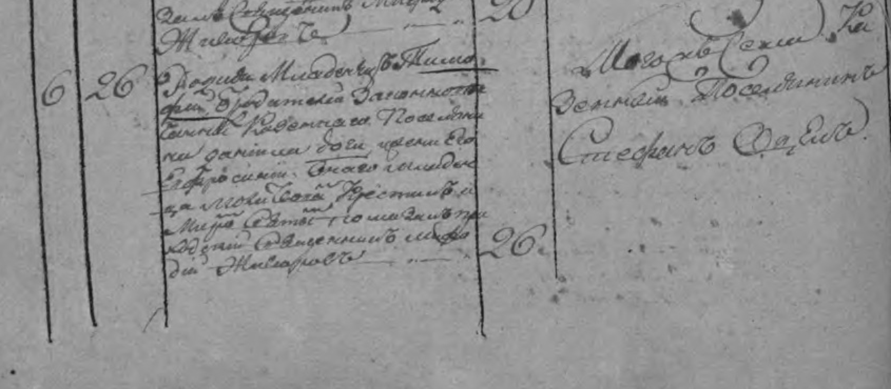
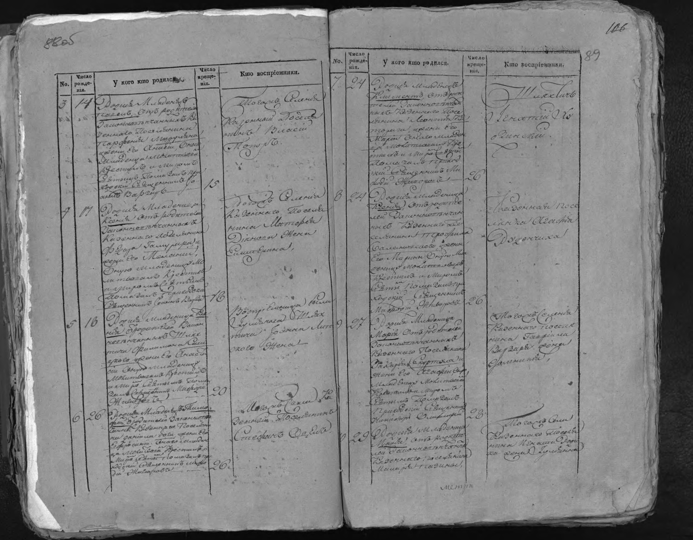
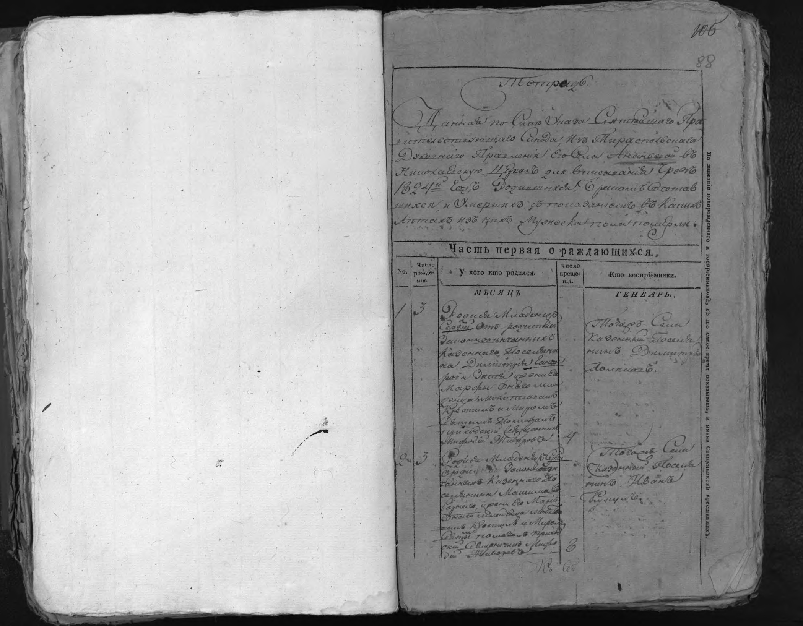
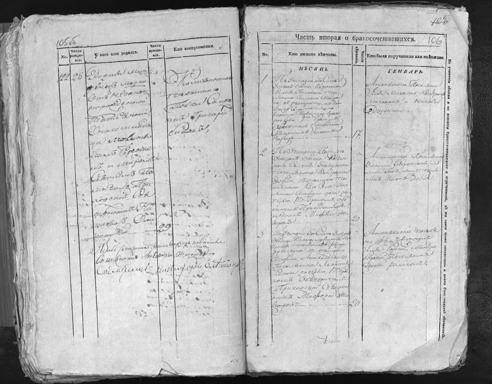
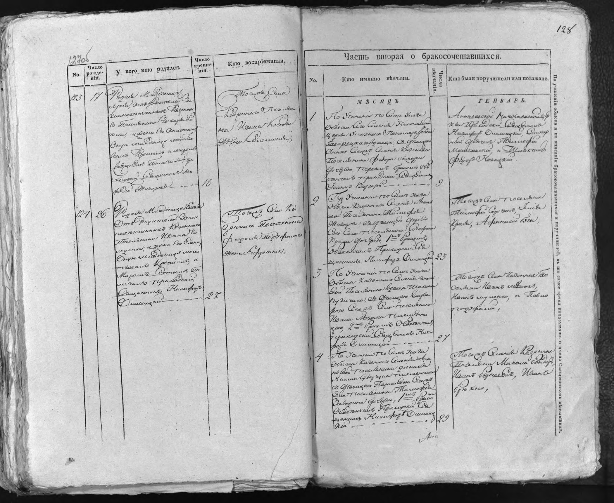

Данило Дога та Єфросинія: новий запис про їхню дитину
26 січня / 7 лютого 1824 року в ананьївській метричній книзі записані народження і хрещення дитини Данила Доги та Єфросинії. Хрещеним був Стефан Дога.
Нова зачіпка, родинний зв’язок із деревом ще не доведений. Ім’я дитини попередньо прочитане як «Анисія» [?]. Імена батьків і хрещеного читаються виразніше. Нових споріднень у дерево не внесено.
| Батько | Данило Дога, казенний поселянин; по батькові немає. |
|---|---|
| Мати | Єфросинія, його дружина; дівоче прізвище й по батькові не названі. |
| Хрещений | Стефан Дога, казенний поселянин того ж села. |
| Дата | Народження і хрещення: 26.01.1824 ст.ст. / 07.02.1824 н.ст. |
| Місце | Миколаївська парафія Ананьєва; точного місця пологів не наведено. |
| Смерть і тривалість життя | Не встановлені. |
Джерело: офіційна копія ДАОО 37/3/281, зображення DjVu 92, унизу ліворуч. Каталог із посиланнями на копії. Номер DjVu не є номером зображення FamilySearch.
Повний звіт для Claude — TXT · Журнал — JSON
Що дає цей запис
У шлюбі Євдокії 1823 року її батьком названий Данило Дога. Тут з’являється сім’я чоловіка з таким самим ім’ям і прізвищем у тому ж поселенні. Ще не доведено, що це одна людина й що Єфросинія — мати Євдокії.
Стефан Дога також названий батьком Тетяни в її вінчанні з Кондратом Рублею 20 січня 1824 ст.ст. Через шість днів Стефан Дога виступає хрещеним у цій самій парафії. Це конкретна підстава для зіставлення, але без по батькові або іншого прямого підтвердження їх не ототожнено.
Мати в записі Дог 1831 року — Меланія Матвіївна. Її не підмінено Єфросинією, а чоловіків із двох записів не об’єднано. Хрещення також не пояснює, ким Данило і Стефан доводилися один одному.
Що перевірено цього разу
Візуально переглянуті народження Ананьєва за 1824 рік, № 1–122 (37/3/281, DjVu 91–109), та 1827 рік, № 1–124 (37/3/320, DjVu 108–124). Дитину Євдокії та чоловіка, попередньо прочитаного як Флорентій у шлюбі 1823 № 33, поки не встановлено. Це пошуковий перегляд, не повна транскрипція і не остаточне виключення.
Народження 1825–1826 залишаються для наступного проходу. Новий запис 1824 № 6 не виявлений у текстах актуального репозиторію; неопубліковані нотатки Claude не перевірені.
Скани для перевірки





Повний звіт, обмеження та наступні перевірки
ДОГИ В АНАНЬЄВІ: НАРОДЖЕННЯ 1824 РОКУ І ЖУРНАЛ ПОШУКУ Перевірено 18.11.2026. База GitHub: 47e8b46c1f9b04066d55300163aab5f99cf230f9. НОВА ЗАЧІПКА У книзі Миколаївської церкви Ананьєва за 1824 рік, № 6, записана дитина Данила Доги та його дружини Єфросинії. Хрещений — Стефан Дога. Це документований зв’язок через хрещення між двома місцевими носіями прізвища. Спорідненість із Тетяною Догою та прямим родоводом користувачки не встановлена. ТОЧНИЙ ПОКАЖЧИК ДАОО, фонд 37, опис 3, справа 281; арк. 88 зв., частина перша, № 6. Офіційний DjVu, зображення 92 (рахунок від 1), нижній запис лівої сторінки. Оригінал: https://archive.od.gov.ua/wp-content/old-files/EL_ARH/M/0037/0037_03/0201-0300/0037_03_0281_DAOO.djvu Каталог і посилання на копії: https://uk.wikisource.org/wiki/Архів:ДАОО/37/3/281 FamilySearch, перша частина справи: https://www.familysearch.org/search/film/103559378 Номер DjVu 92 НЕ переносити автоматично на FamilySearch. Новий запис прочитаний саме з офіційного DjVu. Рік, церква і заголовок «Генварь» підтверджуються попереднім розворотом DjVu 91, арк. 88. На потрібному розвороті новий місяць не починається. ЩО ПРОЧИТАНО Народження: 26.01.1824 за юліанським календарем / 07.02.1824 за григоріанським. Хрещення: також 26.01 / 07.02.1824. Різниця календарів для цієї дати — 12 днів. Ім’я дитини: попередньо «Анисія» [?]. Воно перенесене між рядками; це читання залишене з позначкою невпевненості. Батьки та хрещений читаються виразніше, ніж ім’я дитини. Батько: Данило Дога, казенний поселянин. По батькові не наведене. Мати: Єфросинія, дружина Данила. По батькові й дівоче прізвище не наведені. Батьки названі законно вінчаними; дати їхнього шлюбу немає. Хрещений: Стефан Дога, «того ж села казенный поселянин». По батькові немає. Місце: Ананьїв, Миколаївська парафія; це місце реєстрації та проживання сім’ї. Окремого місця фактичних пологів, адреси або хутора не названо. Дата смерті й тривалість життя дитини невідомі. КЛЮЧОВІ УРИВКИ, З НОРМАЛІЗОВАНОЮ ОРФОГРАФІЄЮ Батьки: «…казенного поселянина Данила Доги, жены его Ефросинии…». Хрещений: «Того ж села казенный поселянин Стефан Дога». Не повна дипломатична транскрипція; оригінальний почерк, скорочення й переноси див. у скані. ЧОМУ ЦЕ КОРИСНО І ЧОГО НЕ ДОВОДИТЬ 1. У вінчанні № 33 за 1823 рік батько Євдокії названий Данилом Догою. Збігаються ім’я, прізвище і поселення. Це підстава зіставити сім’ї, але поки НЕ доказ, що Єфросинія — мати Євдокії або що новонароджена — її сестра. 2. У вінчанні Кондрата Рублі й Тетяни 20.01.1824 ст.ст. батько нареченої — Стефан Дога. Через шість днів у цій самій парафіяльній книзі Стефан Дога виступає хрещеним. Це близький за часом збіг імені й місця, але немає по батькові або прямого пояснення, що це та сама людина. 3. Відомий запис Параскеви 1831 року називає матір Меланією Матвіївною, а не Єфросинією; батька попередньо прочитано як [Дани/Даны?] Стефанович Дога. Новий запис не дозволяє автоматично об’єднати цих чоловіків. Повторний шлюб — лише неперевірена можливість. 4. Стефан міг бути родичем Данила або іншим близьким знайомим. Роль хрещеного не встановлює конкретного кровного споріднення. 5. Нових осіб і недоведених батьківських зв’язків до основного дерева не додано. Запис опублікований як окрема дослідницька зачіпка. ПЕРЕВІРКА ПОВТОРНОГО ПОШУКУ Перед роботою перевірено актуальний origin/main. Пошук у текстових матеріалах репозиторію за варіантами Єфросинія / Ефросиния / Анисія та Дога з 1824 роком цього запису не виявив. Це не охоплює неопубліковані нотатки Claude. ЖУРНАЛ НОВОГО ПЕРЕГЛЯДУ 1824: ДАОО 37/3/281; народження, DjVu 91 праворуч — 109 ліворуч; арк. 88–105 зв.; № 1–122. Знайдено запис № 6. Дитину пари з вінчання 1823 № 33 не встановлено. 1827: ДАОО 37/3/320; народження, DjVu 108 праворуч — 124 ліворуч; арк. 112–127 зв.; № 1–124. Дитину потрібної пари не встановлено. Обидва розділи переглянуті візуально за іменами батьків. Це НЕ повна транскрипція всіх 246 записів і НЕ доказ відсутності потрібної сім’ї. Наречений 1823 року попередньо прочитаний як Флорентій; прізвище лишається нерозібраним, тому пошук за ним обмежений. Народження 1825 і 1826 років у цьому проході ще не перевірені. Попередній перегляд шлюбів за ці роки не є переглядом народжень. НАСТУПНА ПЕРЕВІРКА Пошук дітей потрібної пари у 1825–1826 роках; пошук шлюбу Данила Доги та Єфросинії; інші народження цієї пари. Для зіставлення Стефана потрібен запис із по батькові, віком або прямо названим родинним зв’язком. ЗБЕРЕЖЕНІ СКАНИ research-doga-1824-birth6-detail.png — Збільшення запису № 6, арк. 88 зв.: батьки Данило Дога та Єфросинія; хрещений Стефан Дога. Ім’я дитини попередньо прочитане як «Анисія». Кадрування збільшене вдвічі, без домальовування. research-doga-1824-birth6-page.jpg — Повний розворот: № 6 унизу ліворуч, арк. 88 зв.; праворуч арк. 89. Офіційний DjVu, зображення 92, рахунок від 1. research-doga-1824-title.jpg — Заголовок: Ананьїв, Миколаївська церква, 1824 рік. Арк. 88, DjVu 91. Тут починається січень, який триває на наступному розвороті. research-doga-1824-births-end.jpg — Кінець народжень 1824 року: арк. 105 зв., № 122; праворуч починаються шлюби. DjVu 109. research-doga-1827-births-end.jpg — Кінець народжень 1827 року: арк. 127 зв., № 123–124; праворуч починаються шлюби. ДАОО 37/3/320, DjVu 124.